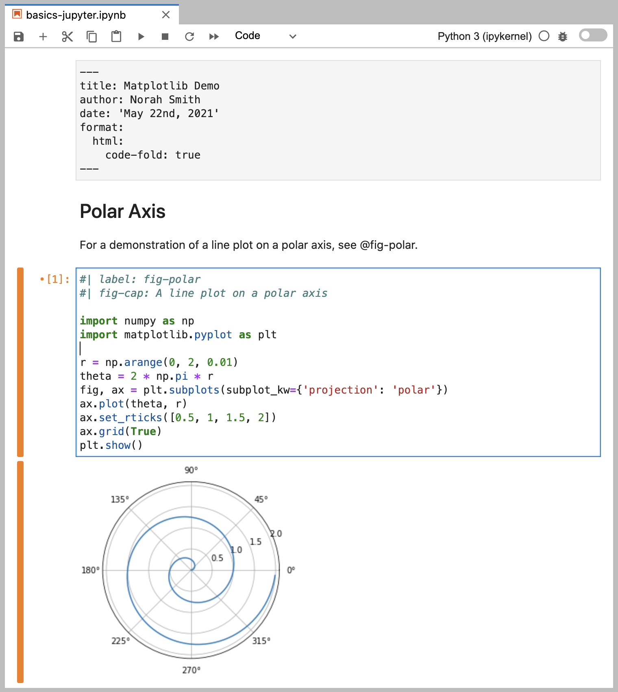

Static Website Triumph
Static website is a website built upon a pre-rendered html generated from markdown. Static website triumph because the markdown format makes it easier for writing (at least for me), offered flexibility to write Latex to write equation like \(\frac{4}{3}\pi r^3\), a code block like this, or below, which makes it suitable for blog about programming/ data science.
The simplicity makes it easier to pour your words into sentences, sentences into a paragraph. You can focus about writing the content you want to write, instead of fiddling around about CMS. 1
My first personal website was initially built using jekyll-theme. I think the looks of the website is quite nice, given how easy for me to just forking the repo and making it my own. The theme is from al-folio theme, and by default it was designed for academic, supporting CV, list of publications (which handling bibtex better than Quarto at the moment), and of course blogging with categories, etc.
I was convinced that static website is the way to go for me, but Jekyll-based theme is not as friendly-used as I thought It would be. For once, it uses Ruby Gem, which I am not familiar with and frankly the development is rather behind other languange. That means you have less change of finding answer online, compared to other language.
I had multiple occasions where I just undo the whole thing, because when I ran bundle exec jekyll serve, it won’t render. Some dependencies issue, etc. Personally, if you plan to add more content to your blog, I would look the other way.
Quarto by Posit 2
Enter Rstudio Conference 2022, where a good amount of people gather in annual meeting for R-people. Among other important announcement (including changing their name to Posit, they introduced Quarto, an open source project to bring scientific communications easier and more inclusive.
What is good about Quarto is it combines what was good about Rmarkdown, and make it more inclusive (as it drops the R from its name). Even more, the compatibility to pandoc engine, makes it easier to convert it from and to other format, this includes jupyter notebook, which is a huge plus for me. Mainly because I worked primarily in python, and the fact that I can work on jupyter notebook, do EDA, and when I am ready to post I just have to render the file before upload it to the website is godsend.
In order to make an .ipynb file can be rendered by quarto, it has to provide two things. One is the raw cell where the frontmatter (first cell in the image below) is, and second is the frontmatter has to specify which kernel/ jupyter would it use (mine is set to python3). See example image below, or read the docs for python for details.
{kind=link}

If you prefer a tutorial video, I highly recommend Isabella’s video, in which she show some practical step-by-step when making a blog using quarto.
Not only that, quarto allows use to generate multiple format from presentation (revealjs, pptx), article, report in pdf or docx, easily from a single markdown .qmd file. I’d probably write a post explaining about that in the future. Perhaps diagram below would simplify why I liked Quarto flexibility.
Code
flowchart LR
A[.ipynb] --> B(.qmd)
B --> C{quarto render}
C --> D[.html]
C --> E[.pdf]
C --> F[.docx, .revealjs, etc]
Lastly, and here is my most favourite part (believe it or not) is the code block allows for copy and paste button! I tried to create a code block in my previous blog, and it just grey rectangular with no copy-paste button. I think this is an essential feature, as the theme is reproducible science. You wanted the minimize the barrier as low as possible, and this will definitely help.
What Quarto Lacks
The good thing about quarto (simplicity) can be a cons for some people. When comparing to my previous website built on Jekyll, the default theme quality is still subpar. I need to do some personal tweaks to make it more appealing visually. Luckily, you don’t have to invent the wheel, as there are several blogs I used as inspirations for their custom theme. Below are some of my favourite authors, in no particular order.
You can use their website repo as inspiration, on how they change the font theme, size, page layout, blog setting, color theme. Pay attention to their _quarto.yml and theme.scss!
Last but not least, the quarto project is still in develop
Footnotes
This is one of the thing I am struggling when trying wordpress.↩︎
Previously R Studio. Read the announcement↩︎
Citation
@online{ariewijaya2022,
author = {Aditya Arie Wijaya},
title = {Migrating {My} {Personal} {Blog} to {Quarto}},
date = {2022-10-21},
url = {ariewjy.github.io/posts/02-migrating-to-quarto},
langid = {en}
}